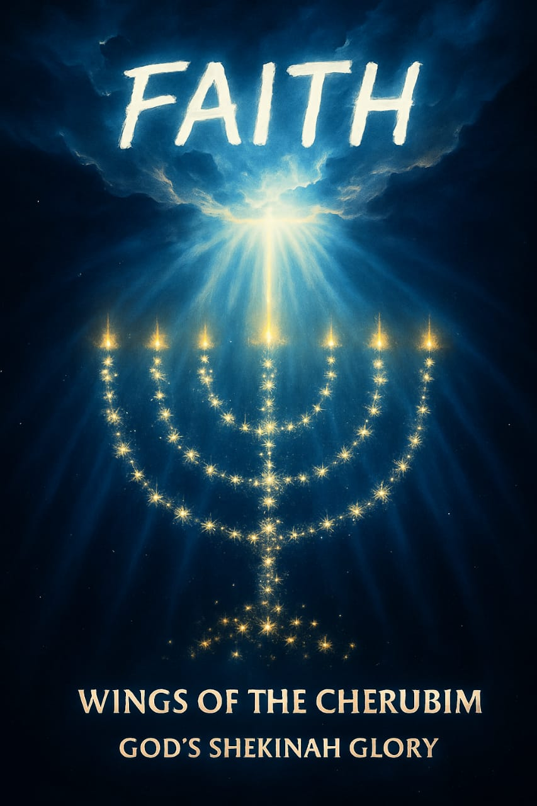

Wings of the Cherubim
THE RETURN
Unveiling Sacred Prophetic Revelations
Introduction: The Unveiling Vision
SCROLL INSIGHTS
📜 The Scrolls of Revelation
🕊️ Scrolls of Revelation
Explore the divine scrolls revealed through Wings of the Cherubim.
Haiti, a nation cradling a powerful spiritual legacy, is uniquely emblazoned with a flag steeped in profound divine meaning. Far more than a national emblem, it is a spiritual tapestry, deeply woven into the fabric of biblical prophecy and sacred connection. On these digital scrolls, we embark upon a profound journey to explore the intimate ties between Haiti's flag and the Holy Scriptures, discerning how its very elements resonate with God's majestic plan for all humanity.
Zechariah 4:5–6 describes a spiritual revelation given to Zerubbabel, where an angel reveals symbolic meanings for five material things, presented as a divine declaration for the nation of Haiti. The angel unveils a spiritual banner sealed above the Haitian flag, symbolizing the very Word of God for Haiti. The four-square insets within the flag are explained as spiritual emblems, each image interpreted in alignment with prophecies concerning Zerubbabel (a type of Jesus) and the mountain becoming a plain (v.7), signifying God's mercy and divine intervention.
God's Unwavering Judgment & Foundation
The Plummet of Righteousness: Haiti's Sealed Destiny
Behold a profound spiritual confrontation, as the Almighty God executes His righteous judgment upon the Adversary, Satan. This judgment is wielded by the plummet of His unblemished righteousness—a truth vividly symbolized by the **seven spirits/eyes of the Lord**, which find their correspondence in the radiant golden triangles upon the Haitian flag, signifying divine oversight. Through this pivotal moment, God meticulously lays the spiritual foundation of Haiti, sealing the nation's destiny by His immutable, sovereign will. This deep interpretation of Zechariah 4:8–10 underscores that the foundation laid by Zerubbabel is not merely physical, but represents the unshakeable righteousness of God Himself, directly linking it to Haiti's spiritual bedrock, destined for glory.
Biblical Connections: Olive Trees & The Golden Candlestick
The Two Anointed Ones: Witnesses of Divine Power
The Haitian flag's meaning is profoundly linked to biblical scripture, especially Zechariah 4:11-14 and Revelation 11:3-5. In these verses, the two anointed ones are identified as mighty witnesses who proclaim the living Word of God, their divine power symbolized through the golden pipes and the blazing candlesticks. These very elements find their vibrant reflection within the Haitian flag, containing symbolic representations of the sacred meeting between the Most High God and man.
To further visualize these connections, behold the very banner of Haiti:

Click to Unveil the Sacred Tapestry of Scripture
The precise, line-by-line wording of Zechariah chapter 4 weaves an intricate connection to Revelation chapter 11, verses 3–5, unveiling a magnificent tapestry of divine light. These ancient words are brought forth into vivid life as they are spiritually married into the four-square inset of today's Haitian flag. The glorious Kingdom of God, descending to Earth, is visually manifested, alongside the awe-inspiring, fiery judgment throne of the Almighty. The transcendent colors of purple and scarlet, symbolizing the sacred meeting of God and man, have birthed the very millennial Kingdom of God on Earth.
Zechariah chapter 4: The Prophetic Vision Explained
v.2: "And he said to me, What do you see? And I said, I have looked, and behold a candlestick all of gold, with a bowl on the top of it, and seven lamps on it, and seven mouths to the seven lamps which are on the top of it."
*The Menorah, the ancient symbol of the nation of Israel, with its seven branches and radiant lights, profoundly represents the seven spirits of God (Revelation 3:1, 4:5, 5:6) and the seven colors of the rainbow, which converge to form pure light. The golden palm tree, positioned at the sacred center of the Haitian flag, flanked by three golden flagpoles on its right and left, embodies this very center candlestick of the Menorah, known to the Jewish people as the Shamash—a potent symbol of God Himself. The golden palm tree in the Haitian flag, adorned with a light blue jacket beneath its twelve palm leaves and crowned with a liberty cap, is seen dynamically descending and splitting a demon head, an iconic depiction of our High Priest, Melchizedek (Hebrews chapters 5 and 6).*
v.2, continued: "Candlestick of all gold, with a bowl on top of it"
*The twelve gracefully turned-down palm leaves of the central tree represent the symbolic "bowl." The seven lamps are the six triangular golden lamps situated at the end of each flagpole, with the central golden palm tree itself serving as the seventh lamp. The golden flagpoles and triangles signify heaven. The "seven mouths" are the seven rectangles below the seven triangles, with the palm tree itself forming the seventh rectangle—the Chinese symbol for mouth being a rectangle.*
v.3: "And two olive trees by it, one on the right side of the bowl and the other on its left side."
*These two olive trees are powerfully represented by the two sets of wooden wagon wheels with eight spokes each, positioned on either side of the golden palm tree. The number eight in Hebrew symbolizes eternity.*
v.6: "Then he said to me, This is the Word of the Lord to Zerubbabel, saying, 'Not by power nor by might, but by my Spirit, says the Lord of Hosts.' Adonai Tzva'ot - Hebrew"
*This is a divine declaration for Haiti, a spiritual banner revealed within the flag itself. Zerubbabel ("out of Babylon") is a prophetic type of Jesus.*
v.7: "Who are you, O great mountain? Before Zerubbabel you shall become a plain; and He shall bring forth the headstone of equity and mercy."
*A final judgment scene where God acts as defense counsel and judge against Satan, establishing the creation of hell (Psalm 2:5). The plummet line signifies God's perfect righteousness. The building of this "house" (nation) refers to Haiti.*
v.14: "Then he said, These are the two anointed ones who stand by the Lord of the whole earth."
*This section transitions to "Spirit." The olive trees become olive branches (wooden spokes), now beside the golden pipes (cannons) pouring golden oil (Word of God). The light blue powder horns under the cannons signify heaven (light blue). This transition moves us from 518 BC to 90 AD, connecting the "two anointed ones" to the "two witnesses."*
Revelation chapter 11: The Witnesses Manifested (90 AD)
v.3: "Then I will give power to my two witnesses, and they shall prophesy a thousand two hundred and threescore days, clothed in sackcloth."
v.4: "These are the two olive trees and the two candlesticks standing before the Lord of the earth."
v.5: "And if anyone desires to harm them, fire will consume their enemies; and if anyone desires to harm them, he must in this manner be killed."
*Here, God’s Word orchestrates a spiritual, supernatural connection transcending time itself. In the very heart of the flag, we behold a golden palm tree descending, powerfully splitting a demon head. A spiritual door has been opened; the demon head has been utterly vanquished. This door in the spirit realm was opened by the irresistible force of praise. The ancient curse is being removed from the earth.*
*In verse 3, the language of Zechariah 4:14 finds its perfect echo. The "two anointed ones" have been revealed as God's "two witnesses" in Revelation 11:3. They are clearly identified by the same language: "These are the two olive trees." The golden cannons, serving as the two golden pipes, now connect directly to the candlestick, which becomes two. They are mystically married into the two witnesses, from whom fire proceeds, just as fire issues from cannons. In Revelation 11:4, the two olive trees and the two candlesticks equate to the two golden pipes, the two anointed ones, and ultimately, the two witnesses (representing Jesus and the Holy Spirit). The golden palm tree is none other than the Lord of the Earth, the Melchizedek. These two anointed ones (the two witnesses) will prophesy for 42 months (3 1/2 years) during the reign of the Antichrist. This occurs simultaneously with the 144,000 Orthodox Jews, commissioned as witnesses in Isaiah 43:10-15, who evangelize throughout the world (Revelation 7:9-14). This profound connection into the book of Revelation signifies the ultimate fulfillment in the last days and the complete removal of the curse from the earth. All is pictured as a multi-dimensional, timeless revelation, where Jesus and the Holy Spirit are seen as the very face of God radiating throughout the flag.*
*All this stems from a divinely inspired reformatting of the United States Military Seal of 1775. This was a vision granted through the sheer power of the Holy Spirit, demonstrating God's movement beyond human comprehension. Had the valiant Haitians not fought in and enabled George Washington's victory in the American Revolution, the reformation and addition of the four-square flag inset by Catherine Flon, adapted from the U.S. Military seal, would not have transpired. A monument in Savannah, Georgia, stands as a solemn tribute to the Haitians who fought and sacrificed for America’s independence, bearing witness to this profound connection.*
The Divine Spectrum: Color Symbolism
Heaven's Hue, Earth's Stain, and the Purple of Redemption
The Haitian flag unfurls a rich and vibrant color scheme, each hue imbued with profound theological significance. **Light blue**, seen prominently, reaches upward, representing the boundless expanse of the heavens, God's very throne. **Scarlet (red)**, a color echoing the earth, links profoundly to Adam (whose name means "red earth"), Edom, and Esau, symbolizing humanity's earthly foundation and fallen state. **Gold**, gleaming throughout the flag's central motifs, speaks of divine glory, the sacred, and the heavenly realm.
The most compelling revelation lies in the harmonious interplay of these colors: when light blue seamlessly blends with or meets scarlet, a majestic **purple** emerges. This purple is not merely a color; it is a profound spiritual emblem of the **meeting of God and man**, the divine embracing the human. This powerful confluence of blue, purple, and scarlet is not arbitrary; it is woven throughout biblical narrative, from the intricate blueprints of the Tabernacle and the priestly garments in Exodus 25-39 (mentioned nine times in Exodus 39 alone) to the New Testament, where it dramatically appears in the robes placed upon Jesus during His judgment (Matthew 27:28 describes a scarlet robe; John 19:2 explicitly states a purple robe, confirming this consistent spiritual color code). Thus, the entire flag of the nation of Haiti, through its very essence of purple and scarlet, powerfully proclaims the meeting of God and man—a living testament to Jesus Christ, the God-Man, the Son of Man.
The flag’s central golden palm tree stands as a testament to the Lord of the Earth, a dual connection to both the ancient priesthood of Melchizedek and the golden anointed ones prophesied in the Bible. Its spiritual significance thunders forth the divine authority of God over all creation. Furthermore, the very fabric of the flag—fine twined linen—symbolizes the righteousness of the saints, a purity made possible only by this sacred meeting of God and man, achieved through the resurrection power of the **scarlet blood of the Lamb**.
Spiritual Meaning: A Pathway to Salvation
The Flag as a Prophetic Herald of Christ’s Return
The Haitian flag, in its profound colors and intricate symbols, stands as a vibrant testament to God's eternal covenant with humanity and His magnificent plan for salvation. The golden pipes, representing the outpouring of divine truth, the two anointed ones—mighty instruments of God’s will—and the fire they bring forth, are potent symbols of divine prophecy and irresistible power, as revealed in the dramatic unfolding of Revelation 11. Through this divine intervention, the ancient curse upon the earth is destined to be fully removed, and the Lord’s supreme authority over all nations is firmly established for eternity. The flag thus represents the profound, transformative spiritual journey of salvation, made possible solely through the sacred meeting of God and man in Jesus Christ.
In its deepest essence, the Haitian flag transcends its role as a mere national symbol; it is a potent spiritual declaration, weaving together past, present, and future through the threads of biblical prophecy, divine judgment, and the glorious resurrection power of Jesus Christ. The nation’s past covenant with voodoo, a spiritual bondage, is understood to have irrevocably expired in 2004. God’s unwavering justice followed—evidenced by significant events such as the devastating 2010 earthquake—signifying a profound divine turning point and the laying of a new, righteous, and unshakeable foundation for Haiti’s future in God.
Creation, Sound, and The Living Word
From Divine Vibration to Manifest Reality
From the very core of God’s boundless love emanated the primal forces of creation: divine vibration, sacred sound, and the powerful, spoken Word. This primordial command, "Let there be light," did not merely initiate existence; it ignited it. The celestial harmonies of Psalm 148 and the thundering voice in Psalm 29 eloquently echo this magnificent process, revealing how Jesus, the manifest image of the invisible God (Colossians 1:15, Hebrews 1:3), spoke the cosmos into being. His very words possess the power to penetrate and divide the soul and spirit, illuminating the depths of the heart.
Delve Deeper into the Mystery of Creation
For God’s first command in Genesis 1:3, "Let there be light," to be executed, the very concept of words formed from sound had to be divinely pre-established. Sound itself is a direct result of vibration. God, in His essence, is Love—a dimension of anointing love whose profound thickness is unknown to mankind. This immense power-force of love propelled spiritual vibration, forming intricate sound waves, then syllables, and finally, words, culminating in the entirety of creation. God first established a spiritual atmosphere of time, and then from that profound silence, the words echoed forth as seen in Psalm 148:5-6: "For He spoke and they were made; He commanded and they were created. He also established them forever and ever; He has made a decree which shall not pass." This three-part statement reflects the manifestation of the three-part fullness of God: Body, Soul, and Spirit.
The very first name for God in the Bible, in Hebrew, is Elohim. The suffix "im" denotes a plurality within a singular God (Elohim Tzva'ot, the Creator God of Hosts). The activation of Psalm 148, a psalm of creation, arises from the praise offered by His creation and His angels, culminating in Psalm 150.
Psalm 29 parallels Psalm 148, showing Jesus, God's physical manifestation, speaking. It, too, operates in a three-part fullness. Jesus, being God's visible image (Colossians 1:15: "He is the image of the invisible God." Hebrews 1:3: "His Son... the brightness of His glory and the express image of His person."), descended into His cursed earth, anointed with the Father's power of creation. Psalm 29:3-4 declares: "The voice of the Lord is over the waters; the God of glory thunders; the Lord is over many waters." After His baptism, He was empowered. He defeated Satan by the Word. He then came to the Sea of Galilee and spoke two simple words to two men, "Follow me!" Jesus, being God's physical image in a cursed earth, spoke those two words to two sets of two men and miraculously separated their souls from their spirits. For the very first time since the Fall and the curse, the spiritual ears of their hearts were enabled to truly hear the Word. Hebrews 4:12 powerfully articulates this divine surgical precision: "For the word of God is living and powerful, sharper than any two-edged sword, piercing even to the division of soul and spirit, and of joints and marrow, and is a discerner of the thoughts and intents of the heart."
The Genesis of The Curse & The Promise of Salvation
Redemption's Song: Through the Blood of Christ
In the beginning, God created all things, and they were profoundly good (Genesis 1:31, Psalm 104, Revelation 4:11). Yet, in a moment of fateful choice, the self-righteousness of man made a free-will decision to grasp the knowledge of good and evil, desiring to be "like God"—even though he was merely a creation, utterly lacking the power to create. As a devastating consequence of man's free-will decision, the Creator God, in His divine justice, cursed the man who had been deceived by the shining being—Satan. All that had been entrusted to man was now usurped and placed under the dominion of this shining adversary. God then, too, pronounced a curse upon Satan. The very earth itself, and woman, were also brought under this curse. All created good on the earth was now marred. Consequently, the entire earth lies groaning in darkness and bondage.
Journey Through The Curse to Redemption
Since it was the Almighty God who originally cursed creation and man, it stands to reason that only God Himself possesses the power and authority to remove that curse. The essence of life is in the blood. Thus, the curse was definitively removed by the resurrection power of the precious blood of Jesus Christ. This divine reversal will be fully manifested upon His glorious second coming to the earth, when the lamb will indeed lie down with the lion, and nothing shall harm on His holy mountain.
By one man (Adam) came the devastating curse, and by one Man (Jesus Christ) it will be utterly removed. The sin of self-righteous pride ignited rebellion within God's creation through the deception of free will. From that moment when the Creator God cursed the earth, all mankind has been birthed with a fallen nature into a fallen earth, inherently in rebellion against their Maker. However, through genuine Holy Spirit-led repentance and the spiritual washing in the **scarlet blood of the Lamb**, man's self-righteousness and the stain of his sin are purified. This cleansing unlocks a glorious door to heaven and eternal life with God, making salvation uniquely possible through the resurrection power of Jesus Christ. The Haitian flag, in its interwoven colors and symbols, thus powerfully signifies this triumphant path to redemption and the ultimate overcoming of the ancient curse.
Key Time Scriptures: The Tapestry of Eternity
God’s Unchanging Plan vs. Humanity's Temporal Fall
| TIME & ETERNITY (God's Perfect Design) | THE CURSE & FALLEN MAN (Humanity's Reality) |
|---|---|
|
Psalm 139:15-16 "My substance was not hid from you, when I was made in secret, and curiously fashioned in the lowest parts of the earth. Your eyes did see my substance, yet being unperfect; and in your book all my members were written, which in continuance were fashioned, when as yet there was none of them." |
Genesis 3:10-end "And he said, I heard your voice in the garden, and I was afraid, because I was naked; and I hid myself." (Followed by the divine pronouncements of curses upon the serpent, woman, and the earth) |
|
Ecclesiastes 3:14-15 "Whatsoever God does, it shall be forever: nothing can be put to it, nor anything taken from it: and God does it, that men should fear before him. That which has been is now; and that which is to be has already been; and God requires that which is past." |
Psalm 51:5 "Behold, I was shapen in iniquity; and in sin did my mother conceive me." |
These profound scriptures illuminate the stark contrast between God's eternal, perfect design, woven into the very fabric of time, and the temporal, fallen reality of humanity under the curse—yet always held within the embrace of His unchanging, redemptive plan.
Authored by Gregory Shadt
An Anointed Vessel for Haiti’s Spiritual Restoration
This profound revelation and intricate interpretation of the Haitian Flag's biblical meaning and its divine purpose is brought forth through the anointed hand of **Gregory Shadt**, a humble yet powerful vessel raised by God specifically for Haiti’s spiritual restoration and the unveiling of His eternal, life-transforming truths.